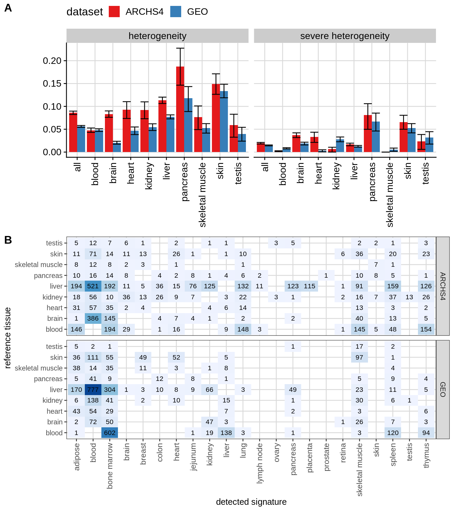

6 Figures for publication
Same as in the section before, but all bioqc signatures aggregated by tissue groups. Additional, we define samples as being “severely heterogeneous”, if the reference signature, i.e. the signature that should be present according to the annotation, is not enriched at an unadjusted p-value < 0.05.
We use bootstrapping (R package boot) to derive confidence intervals.

Figure 6.1: Main figure for paper. (A) Fractions of heterogeneous samples per tissue. (B) Sample confusion matrix.